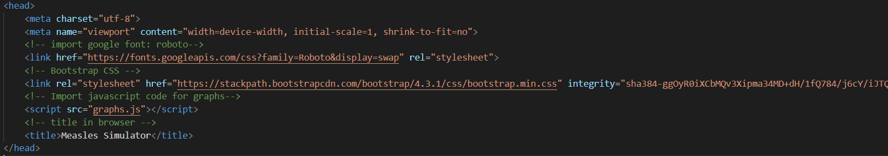

V novicah se je pred kratkim pojavila novica, da so na območju Škofje Loke opazili povečano število bolnikov z ošpicami. Zato sem se odločil, da bom ta aktualen problem uporabil pri izdelavi seminarske naloge.
Ošpice so bolezen, ki se pojavlja po celem svetu. Na njen pojav najbolj vplivajo gostota prebivalstva in dostopnost do cepljenja. Značilnosti te bolezni so:
V nadaljevanju vam prikazujemo agentni model, ki prikazuje širjenje ošpic med prebivalstvom. Uporabniku je pri tem omogočena izbira števila prebivalstva, odstotek odpornih oseb (cepljene in tiste, ki so okužbo že prebolele), in odstotek okuženih. Poleg agentnega modela sta v simulaciji nad njim pozicionirana dva grafa. Prvi levi graf prikazuje trenutno število zdravih in okuženih oseb, drugi pa povprečno število okužb v času.
Namen omenjenega simulacijskega modela, do katerega lahko dostopate preko zavihka simulacija je čimbolj nazorno ponazoriti širjenje preučevane okužbe (ošpice). Cilji pa so narediti interaktiven model s katerim lahko ogledujemo hitrost širjenja okužbe pod različnimi pogoji. Z vpisom različnih vrednosti v polja lahko vplivamo na dejavnike, ki v največji meri pripomorejo k pojavu te bolezni. Z vpisom večje številske vrednosti v polje št. oseb lahko ponazorimo večjo gostoto prebivalstva z vpisom večjega odstotka odpornih oseb ponazorimo precepljenost prebivalstva (v Sloveniji je približno 89%), ki prav tako kot gostota prebivalsta igra ključno vlogu pri širjenju te bolezni. V simulaciji agentnega modela so osebe predstavljene s kvadrati. Pri tem je pomembno omentiti, da so zdrave osebe obarvane z zeleno barvo, okužene z rdečo in odporne z modro. Pri stiku okužene in zdrave osebe obstaja 90% možnost, da se zdrava oseba naleze od okužene (sprememba barve agenta iz zelene v rdečo).
Kot že omenjeno sta nad njim prikazana dva grafa, ki prikazujeta trenutno število zdravih in okuženih oseb ter povprečno število okužb v času. V prvem grafu, ki prikazuje število zdravih ter okuženih oseb so zdrave prikazane z zeleno črto, okužene pa z rdečo.
Na sliki spodaj lahko razberete, da sem pri izdelavi te seminarske naloge uporabil knjižnico Bootstrap, ki je prostodostopna preko spleta. Za njeno uporabo sem se odločil, zaradi prihranka časa pri izdelavi "front-enda" spletne strani. Pri izdelavi sem uporabil tudi Google Fonts, s katerim sem določil pisavo. V glavo html code pa sem dodal tudi skripto z javascript kodo v kateri so razredi s pomočjo katerih generiramo grafa prikazana v simulaciji.
 Slika 1: html headV nadaljevanju html kode sem s pomočjo Bootstrapa zapisal codo, ki skrbi za premikanje po navigacijski vrstici, naredil vnosno masko za vpis podatkov ter gumb "potrdi", ki s pomočjo javascript funkcije saveAndPrepare() preveri vpisane podatke, uporabnika obvesti v primeru, da so te nepravilno zapisani ter prikaže in zažene simulacijo modela glede na podane podatke (funkcija je prikazana na sliki 2).
Simulacijo zažene s pomočjo funkcije start(), ki je prikazana na sliki 3. Z njeno pomočjo nastavi pravilno število agentov (okuženih, zdravih ter odpornih oseb), nastavi grafa, in zažene funkcijo loop(). Funkcija loop() pa izriše platno in grafa ter na njih stalno izrisuje agente, pregleduje bljižino le teh s pomočjo funkcije checkAgentProximity() ter posledično preverja tudi trke med njimi, nastavlja vrednosti na števcih ter prikazuje trenutne podatke na grafih.